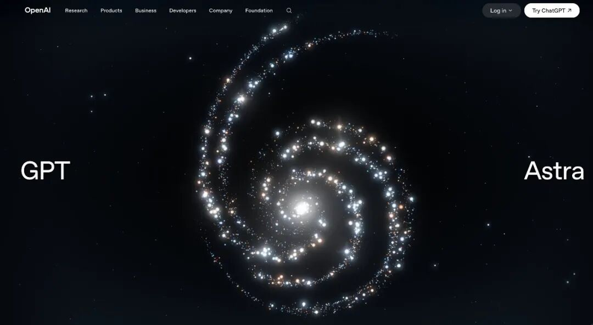
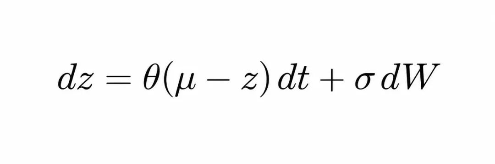
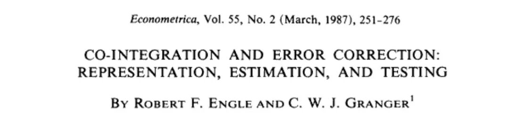
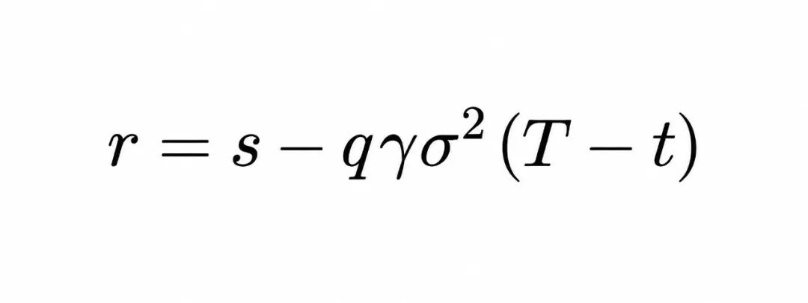
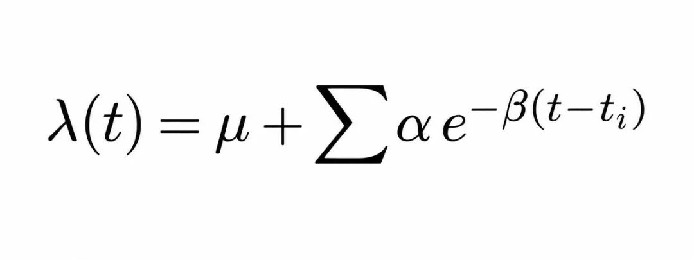
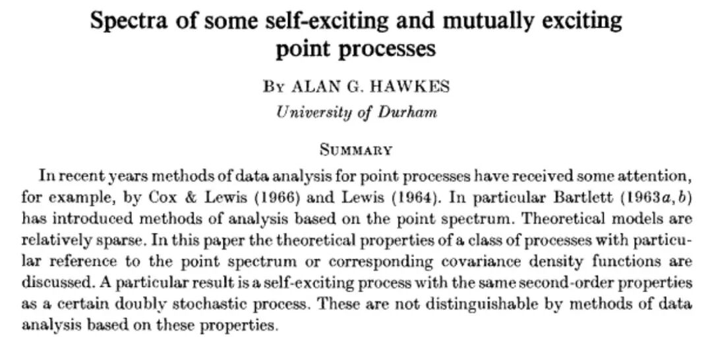
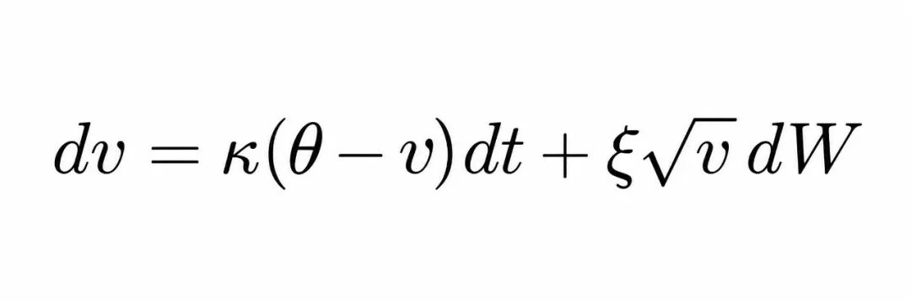
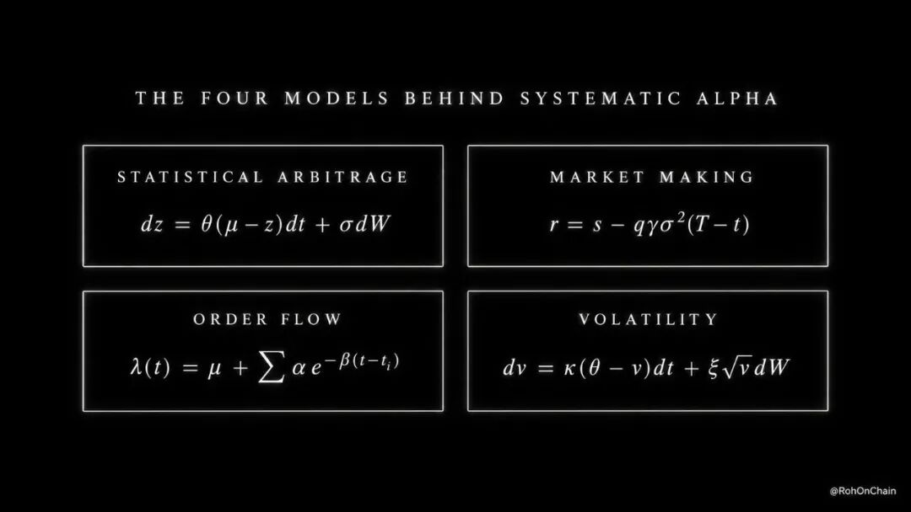
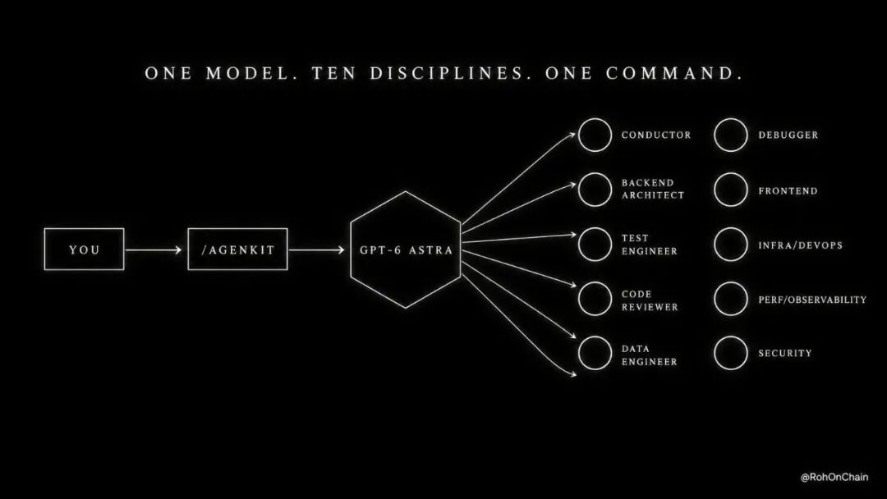
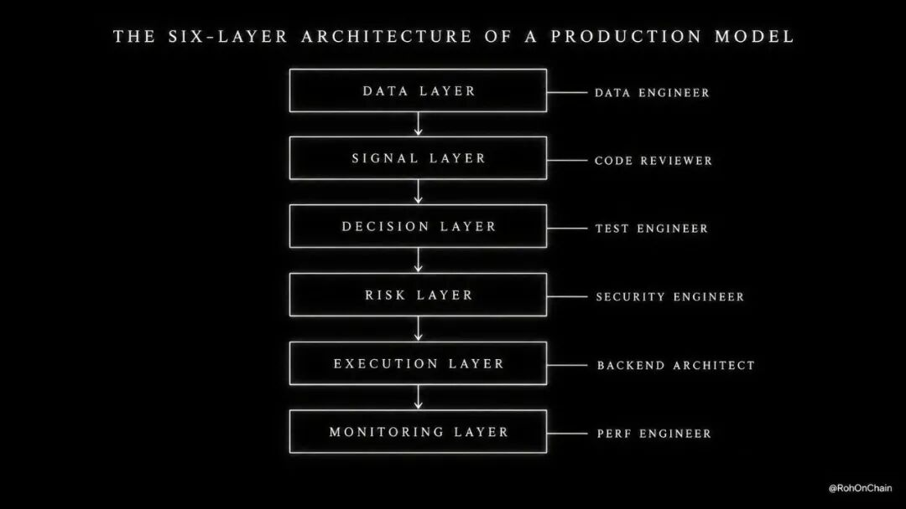

用 GPT-6 Astra 构建对冲基金级数学交易模型：完整拆解
作者 @RohOnChain 是一名后端开发者，专注系统设计、HFT 风格执行与量化交易系统。这篇文章拆解：对冲基金真正在用的四类数学交易模型 + 如何用 GPT-6 Astra 把它们建出来。需要说明：文末推广的 AgenKit 是作者的付费产品（$4.99/月），本文后半部分包含明显营销内容，编译时保留事实与技术部分、弱化推销，请自行判断。
时机背景：OpenAI 三天前刚发布了面向金融服务的 ChatGPT（ChatGPT for Financial Services），底层就是 GPT-6 Astra 的推理能力。Jane Street 在内部基准上测试了 Astra，结论是"编码达到 SOTA，交易直觉相比上一代明显进步，产出的代码需要更少迭代就能达到生产质量"。

第一部分：对冲基金真正在用的四类数学模型
数学交易模型 = 一套用数学写成的规则，决定何时买、何时卖、买多少。没有直觉，投入一美元前先在 20 年历史数据上检验。全球大部分系统性 alpha 流经以下四个模型。
1. 统计套利（Statistical Arbitrage）
两只一起动的资产被拉开，数学说它们会弹回来——像拉长的橡皮筋。ETH 涨 3%，SOL 没跟上，价差被拉宽：买 SOL、空 ETH，等回归后平掉两腿。

核心是 Ornstein-Uhlenbeck 过程：价差展开得越远，拉回力越强。参数 θ 给出半衰期 ln(2)/θ，告诉你回归速度是否够快、值得交易。Engle 和 Granger 在 1987 年完成了形式化。

2. 做市（Market Making）
像收费站： bid 略低于价格、offer 略高，每次往返收走价差。bid 99.98、offer 100.02，赚 4 分钱，一天重复 5000 次。真正的游戏是库存——持仓时来一次崩盘， tolls 全部亏光。

Avellaneda-Stoikov (2008)：库存越多，报价越往甩货方向偏移；波动率上升，价差拉宽。
3. 订单流预测（Order Flow Prediction）
一笔攻击性订单触发更多——像第一声掌声引爆全场。巨鲸买入 200 万美元 perp，机器人跟单，成交量爆炸数分钟。在第一秒识别级联，你就站在行情前面。

Hawkes 过程 (1971)：每笔交易添加随时间衰减的"兴奋度"，当比值 α/β 趋近 1 时，级联即将到来。这运行在现代 HFT 交易台内部，几乎没有任何散户听说过它。

4. 波动率交易（Volatility Trading）
期权是保险，定价基于对未来风暴的猜测。猜测错了，就交易它：期权隐含 45% 波动率，你的模型算出公允值 38——保险贵了 7 个点，卖出、对冲方向、收割修正。

Heston 模型 (1993)：波动率聚集、均值回归、价格下跌时飙升——市场"平坦"的猜测与这种行为的差，就是错误定价。
四个模型，四条公式

在基金里，一个模型需要：研究员推导、开发者编码、数据工程师喂料、评审员检查、基础设施工程师运行、风控官签字——六份薪水、六到九个月，换来一个模型。
数学从来不是墙，论文是公开的。墙一直是对应的团队。
第二部分：完整技术栈
不组团队怎么建？本文的核心洞察：上表里的每一份工作，GPT-6 Astra 都能做——推导数学（研究员）、写代码（开发者）、建数据管道（数据工程师）、审查、测试、部署。问题不是能力，是结构。
打开聊天窗口问 Astra 要一个交易模型，全部能力坍缩成一个非结构化回答：没有 spec、没有架构阶段、没有先写测试、没有评审——只有一个脚本。天才的原始输出，零流程。
给同一个模型一个合适的 harness——带阶段和闸门的工作流——情况完全不同。

作者用他的 AgenKit（安装进 Codex CLI 或 Claude Code）演示这个结构：
- 工作流六阶段：Brainstorm（Conductor 逐个提问直到想法变成书面 spec）→ Architecture（后端架构师设计模块、接口、数据模型、失败策略）→ Plan（spec 变成测试优先的小任务，带精确文件路径）→ Build（每个任务先写失败测试，最小代码通过，再清理）→ Review（每处改动双重裁决：符合 spec 吗、质量过硬吗，关键问题不修不放行）→ Ship（CI/CD、带回滚的部署、安全与性能终检）。spec、架构、计划不经你批准，一个字都不写
结构不增加智能，它把 Astra 的智能逐角色、逐阶段地瞄准。
第三部分：为什么引擎是 Astra
回看 Jane Street 的评价：他们按"交易直觉"给模型打分——模型如何思考市场，而不是如何自动补全代码。Astra 恰恰在这个维度上进步了。
实际构建时是什么样：喂给 Astra 做市问题，它写出效用函数、解 Hamilton-Jacobi-Bellman 方程、推导闭式保留价格、编码校准过程、沿途解释每个假设。量化团队六周的工作，几分钟完成。
三个支撑能力：
- 百万 token 上下文：论文、历史数据、整个代码库放在一个连续推理窗口里，不分块、不遗忘
- 数小时多步推理
：推导、编码、校准、测试、迭代，不断上下文、不需要你盯着
第四部分：完整架构
成品长这样——不是脚本，是六层系统，每层喂给下一层：

1. 数据层：拉实时行情的服务，带重连处理和缺口检测——凌晨 2 点 WebSocket 掉线不会静默杀死你的模型 2. 信号层：数学本体——价差引擎实时计算 z-score，半衰期过滤器决定什么可交易。评审角色验证的是数学正确性，不只是"代码能跑" 3. 决策层：按你的精确阈值触发进出场，每条规则都有先于代码写好的测试 4. 风控层：仓位上限、回撤熔断、每笔订单前的敞口检查 5. 执行层：下单带重试、确认、对账——系统永远知道自己实际持有什么 6. 监控层：实时仪表盘和全组件告警——看不见的模型就是不可信的模型
脚本只做信号层，所以脚本一遇真钱就死。系统能扛住凌晨 2 点的断线、持仓中的崩盘、静默的错误计算——因为每种失败模式都在第一行代码之前设计过了。
第五部分：具体构建步骤
从空文件夹到跑起来的数学模型：
1. 搭环境：`npm install -g @openai/codex`，登录 ChatGPT Pro 解锁 GPT-6 Astra，建目录 2. 装结构层（作者的工具，亦可自行用 Claude Code 的 workflow/动态工作流实现同等结构） 3. 一行提示词启动：`build an Ornstein-Uhlenbeck mean reversion model for correlated Hyperliquid perps`——你不需要懂怎么组织系统，工作流负责结构 4. 回答 Conductor：它一次一个问题——哪些交易对、什么回看窗口、什么入场阈值、多大仓位。你用大白话回答，结束时粗想法变成书面 spec；架构师再展示六层架构，都经你批准 5. 看它建：计划变成带精确文件路径的小任务；每个组件失败测试先行、最小代码通过、清理；评审员验证数学，性能工程师接线监控——闸门式推进、逐项签字 6. 上线迭代：带回滚的部署；先跑 paper trading，盯价差、信号、PnL；想收紧阈值、加 Telegram 告警、修边界情况，每处调整都是又一行提示词；paper 干净后转实盘
总结
全球大部分系统性 alpha 流经四个数学模型：统计套利、做市、订单流、波动率——四条几十年前就公开发表的公式。数学从来不是墙，墙是团队。
GPT-6 Astra 能做团队里的每一份工作，顶级量化交易台已确认它的交易直觉是真的。但没有结构的能力只是聊天机器人：在聊天窗口里要一个交易模型，你得到一个第一次遇到真实市场就会死的脚本。
结构 = spec 闸门、架构闸门、测试先行构建、双阶段评审、带回滚的部署——一支高级工程团队的精确工作流，包在模型外面。一个模型、一条命令，产出的是能在真实市场存活的六层生产系统。
同一个结构能交付任何你用代码构建的东西——SaaS、后端服务、数据管道、Telegram bot。交易模型只是最难的那个测试：它都能交付，就没有它交付不了的。
---
本文为 @RohOnChain《How to Use GPT-6 Astra to Build Complex Mathematical Trading Models》的中文编译整理（含营销内容删减），原文见 [X @RohOnChain](https://x.com/RohOnChain/status/2099500150939127945)。本文不构成投资建议。